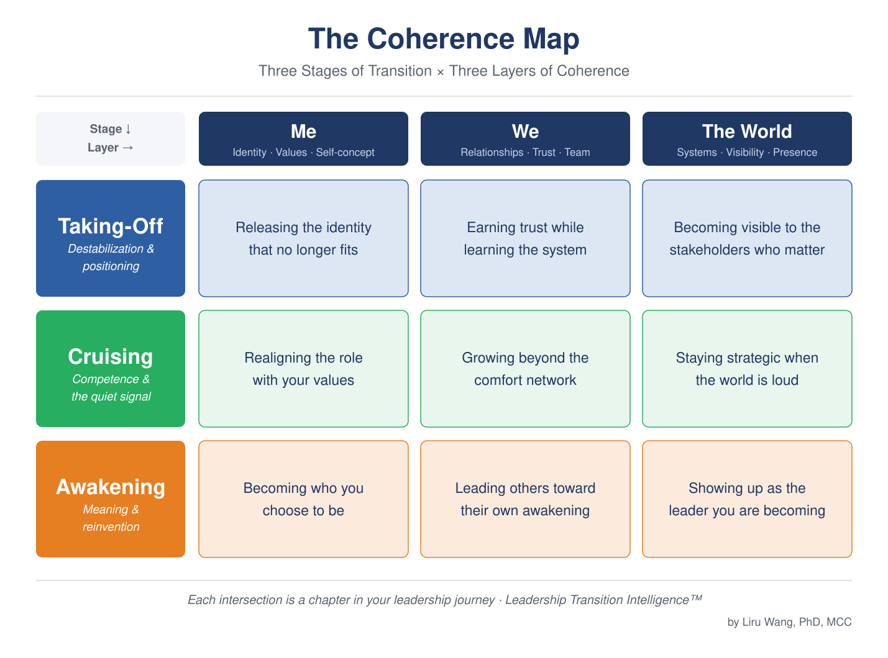

The part nobody prepared you for
You earned the role. You were the obvious choice. And some weeks in, something is off in a way you cannot name and would not say out loud.
You cannot go to your boss — they promoted you, which means they trusted you, which means showing up with problems feels like proof that their trust was misplaced. You cannot tell your team; you are supposed to be leading them. You may not fully admit it to yourself.
So you keep going. Performing a confidence that costs you more each day to sustain.
This is not a performance problem. It is not a confidence problem. It is a transition — and transitions have a structure.
The intelligence nobody taught you
IQ — the capacity to analyze, strategize, and solve — is table stakes at the senior level, where virtually everyone in the room has it. EQ has, over two decades, rightly become a cornerstone of leadership development.
But neither was designed to address what happens when an external change calls for an internal identity shift.
Leadership Transition Intelligence™ — LTQ™ — is the capacity to see those patterns clearly, and to transform them on purpose rather than be shaped by them, emerging as a more coherent and grounded self.
It is the intelligence that operates in the gap IQ and EQ do not cover. And unlike either, it can be developed — literally. The adult brain remains plastic, rewiring itself through new experience and deliberate practice across a lifetime.
Three stages. Three layers. One map.
Every significant leadership transition moves through three stages — and each stage asks something of you across three layers of your leadership life.
Taking-Off
The stage of destabilization and positioning. The ground shifts beneath you and everything feels simultaneously exciting and destabilizing.
How do I prove myself?
Cruising
The stage of competence and the quiet signal. Competence returns, but something quieter starts to pull at you.
Is this still where I want to be?
Awakening
The stage of meaning and reinvention. The questions turn inward, toward meaning, legacy, and what kind of leader you are truly becoming.
Who am I becoming — and is that who I choose to be?
Me
Your identity, your values, your inner coherence. Who you are becoming when the role, the context, or the challenge changes.
We
Your relationships, your team, the people you lead and are led by. How transitions reshape the trust and connection that make leadership real.
The World
The systems, the context, the expectations, the visibility. How you show up and are seen when everything around you is in motion.

| Me | We | The World | |
|---|---|---|---|
| Taking-Off | Releasing the identity that no longer fits | Earning trust while learning the system | Becoming visible to the stakeholders who matter |
| Cruising | Realigning the role with your values | Growing beyond the comfort network | Staying strategic when the world is loud |
| Awakening | Becoming who you choose to be | Leading others toward their own awakening | Showing up as the leader you are becoming |
Nine positions. The framework’s usefulness is not that it predicts exactly where you are. It is that it gives you language for what you are experiencing.
The leaders I work with
Senior and emerging leaders in the middle of a change that is bigger than a job description: a first executive role, a step into unfamiliar scope, a restructure that arrived uninvited, or the slow realization that what used to be enough no longer is.
Most of them are highly capable people who have never had language for this part. Many are leading across cultures — formed in one context, leading in another — and carrying a complexity the standard leadership literature rarely names.
Four ways in
One-to-one executive coaching
Sustained work with a single leader through a transition, typically six to twelve months.
Group executive coaching
The same work with a small cohort, up to fifteen leaders.
Workshops
The LTQ framework applied with a team or a leadership population, in your context.
Speaking
Keynotes and sessions on leadership transition, for any size of room.
Liru Wang, PhD, is an ICF Master Certified Coach — the credential held by a small fraction of coaches worldwide. She spent twenty-five years as an operating executive across pharmaceutical engineering, regulatory affairs, and international business, including general manager and managing director roles, before turning to coaching full time. She has since coached hundreds of leaders around the world.
Start with where you are
The LTQ Self-Assessment takes about six minutes. Eighteen questions across the three stages and three layers. You will finish knowing which stage you are in and what that stage is asking of you.
It shows where you are now, not what you are capable of. Your capacity is what you build next.
The book
Lead Through It: A Compass for Leadership Transition Intelligence is the full framework — the three stages, the three layers, and what each position asks of a leader.